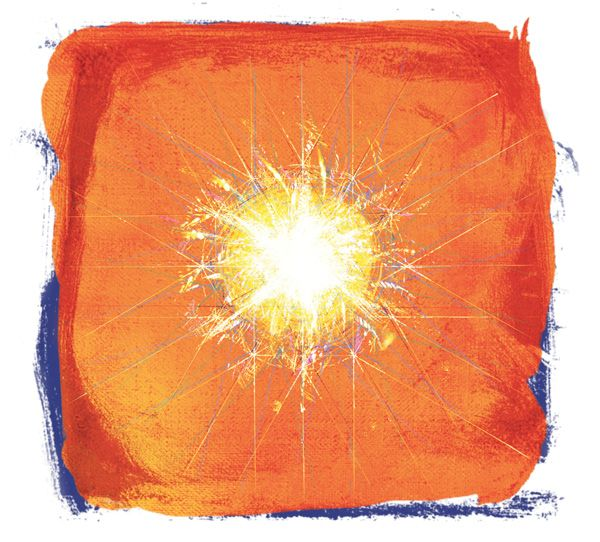

“Love is an element which though physically unseen is as real as air or water. It is an acting, living, moving force . . . it moves in waves and currents like those of the ocean.”
Prentice Mulford (1834-1891)
NEW THOUGHT AUTHOR

The kind of love that the greatest thinkers and saviors of the world talked about is very different from what most people understand love to be. It is much more than loving your family, friends, and favorite things, because love is not just a feeling: love is a positive force. Love is not weak, feeble, or soft. Love is the positive force of life! Love is the cause of everything positive and good. There are not a hundred different positive forces in life; there is only one.
Nature’s great powers, like gravity and electromagnetism, are invisible to our senses, but their power is indisputable. Likewise, the force of love is invisible to us, but its power is in fact far greater than any of nature’s powers. The evidence of its power can be seen everywhere in the world: without love, there is no life.
Take a moment to think about it: What would the world be without love? First of all, you wouldn’t even exist; without love you couldn’t have been born. None of your family and friends would have been born either. In fact, there wouldn’t be a single human being on the planet. If the force of love ceased today, the entire human race would decrease and eventually die out.
Every single invention, discovery, and human creation came from the love in a human heart. If it were not for the love of the Wright Brothers, we could not fly in an airplane. If it were not for the love of scientists, inventors, and discoverers, we would not have electricity, heating, or light; nor would we be able to drive a car or use a phone, appliance, or any of the technology that makes life easier and more comfortable. Without the love of architects and builders, there would be no homes, buildings, or cities. Without love, there would be no medicines, doctors, or emergency facilities. No teachers, schools, or education. There would be no books, no paintings, and no music, because all of these things are created from the positive force of love. Take a look around you right now. Whatever you see that is a human creation would not be there without love.
“Take away love and our earth is a tomb.”
Robert Browning (1812-1889)
POET